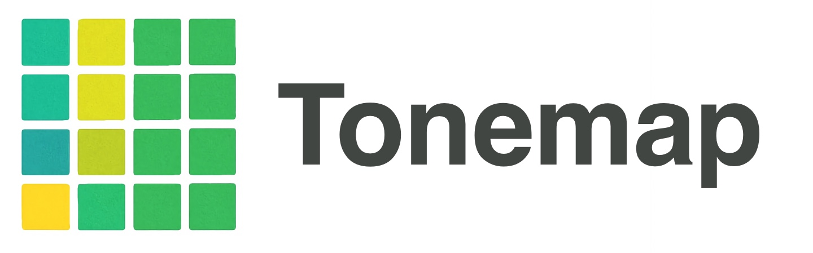

A native iPhone & iPad tuner app.Available now
Tonemap for iOS brings the same real-time pitch and intonation visualization from tonemap.live to a native iPhone and iPad app — built entirely in Swift and SwiftUI, with no web view, no third-party frameworks, and no build tooling beyond Xcode. Pitch detection, rendering, and audio handling all happen natively on-device.
The app is available on the App Store. This page explains how Tonemap for iOS handles your data.
Tonemap processes microphone input entirely on-device using Apple's audio frameworks (AVAudioEngine). Pitch detection runs locally. No audio is recorded, transmitted, or stored on Tonemap's servers, and no audio ever leaves your device.
The app requests microphone permission the first time it's opened, to power real-time pitch detection. If permission is denied, the tuner cannot function, but you can grant access at any time from your device's Settings.
By default, using the free tier of the app requires no account and involves no data collection. Tonemap does not use advertising or third-party analytics/tracking frameworks inside the app, does not sell data, and does not share data with third parties beyond what's described below for Pro subscribers.
Tonemap Pro can be unlocked one of two ways, and each has different data-handling implications:
Tonemap's iOS app relies on two outside services, only when relevant to your use: Polar for web-originated subscription and license verification, and Apple for App Store purchases. Neither is contacted unless you activate or purchase Pro. The app itself embeds no advertising SDKs, analytics SDKs, or other third-party frameworks.
The only data Tonemap's server retains related to the iOS app is the license-key/activation record already used to serve the web app's Pro tier (see the web Terms & Privacy section for that system's retention details). You can remove a device's Pro authorization at any time from the app's Settings, or by emailing support@tonemap.live to request removal.
Tonemap does not knowingly collect personal information from anyone, including children under 13 — the app doesn't collect personal data as part of its normal operation in the first place.
We may update this policy as the iOS app evolves, particularly as any cross-platform account features are added. The date at the top of this page reflects the most recent update.
Questions about this policy can be directed to support@tonemap.live.